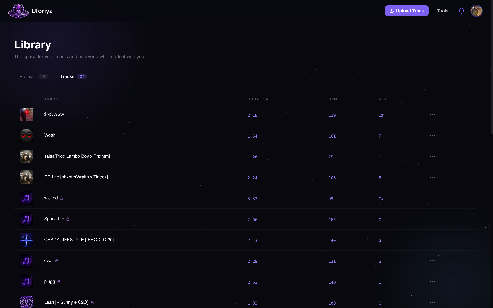

Upload and read the track
Drop in MP3, WAV, FLAC, AIFF or M4A. BPM, key and duration are read on the way in, so you are not typing them yourself.
Uforiya is where unreleased music lives while it is still being made. One place for the audio, every version, the stems and everyone with a hand in it.
Free plan, no card needed. It is a beta, so tell us what breaks.

Working today
Drop in MP3, WAV, FLAC, AIFF or M4A. BPM, key and duration are read on the way in, so you are not typing them yourself.
Rough idea, revised bounce, final master: each one stays where you left it. Only the track owner marks a version as current.
Add collaborators by username or email. Owners, editors and listeners each get exactly the access they need, nothing more.
Waveform playback in the browser, comments pinned to the timestamp, and stems uploaded alongside any version.
Inside the app




Free audio tools
Trim, fade, convert, compress, shift pitch, change tempo, even out loudness. The small fixes that usually mean opening a DAW, exporting, and coming back. Four of them work with no account at all: open uforiya.space/tools, drop a file in, and go.

Drag across the waveform to mark a section, then cut it out or keep only what you marked. You can highlight several sections at once and join what is left, so a take can lose its dead air in a single pass.
Ease the audio in or out instead of stopping on a hard edge. Apply it to the start, the end, or any highlighted range in the middle, and set how long the fade runs.
Move a file between MP3, WAV, FLAC, AIFF and M4A. The file you dropped in is left alone; what you get back is a new one in the format you picked.
Bring the file size down for sending, without an obvious hit to how it sounds. This is file compression, not a dynamics compressor: it makes the file smaller, it does not squash the mix.
Shift the file up or down in semitones while the timing stays exactly where it was. Nothing gets faster or slower, it just sits in a different key.
Speed the file up or slow it down without the pitch sliding with it. Tempo and pitch stay independent, so a part can be moved onto the grid without going chipmunk.
Even out loudness so a quiet bounce is not lost next to everything around it, and a hot one is not clipping before anyone presses play.
Open the page, drop a file in, start editing. Nothing to sign up for and nothing to install.
All seven tools, a higher daily limit, and a finished result can go straight into a project instead of your downloads folder.
MP3, WAV, FLAC, AIFF or M4A. BPM, key, duration, format and size are read as it loads, and the waveform is drawn ready to work on.
Drag across the waveform to mark a section. Mark several and they are handled together, or skip this entirely and let the tool run on the whole file.
The result plays back straight away, so you hear it before you commit. Download it, run another tool on it, or send it into a project if you are signed in.
Plans
Collaboration is on every plan, including the free one. Unlimited collaborators, private and public projects, and stem uploads on every version.
Free forever
Enough to run a real project and see if this fits how you work.
per month CAD
For artists building a catalogue and working with a regular team.
per month CAD
For studios and busy rooms running several records at once.
Prices in CAD. Plan limits can move while the beta runs, and you can cancel from settings at any time.
Questions
Uforiya is a music collaboration platform for unreleased tracks. Artists, producers, songwriters and engineers work on the same track in one place, and the track carries its own owner, roles, versions, stems and comments rather than living in a folder somewhere.
No. Open uforiya.space/tools, drop a file in and start editing. Trim, fade, convert and compress all work without signing up. A free account adds pitch, tempo and normalize, raises the daily limit, and lets a result go straight into a project.
Trim, fade, convert and compress. Pitch, tempo and normalize need a free account, which takes about a minute to create and costs nothing.
Every upload becomes a version under the same track, so the rough idea, the revised bounce and the final master all stay side by side with the date and the person who uploaded them. Only the track owner marks which version is current, so nobody is ever guessing which file is the real one.
Yes. Stems upload alongside any version, and roles decide who can see or download them. A mix engineer added as a collaborator gets the stems for the version they are working on, and nothing outside that.
MP3, WAV, FLAC, AIFF and M4A, both for uploads and for the audio tools. BPM, key, duration and format are read automatically on the way in.
The free plan covers 25 tracks, 5 versions per track and unlimited collaborators, with no card needed. Pro and Premium raise those limits and add analytics. Collaboration itself is on every plan, including the free one.
Cloud storage holds files. Uforiya holds tracks. A track knows its versions, who is on it and what each person is allowed to do, plays back on a waveform with comments pinned to the second, and carries its stems with it. A shared folder of files named final_v3_REALFINAL does none of that.
Beta feedback
Bugs, missing features, anything that felt wrong in the session. Attach a screenshot or a screen recording if it helps. You will get a reply from a real person.
Free to start, open to everyone, and being built in the open with the producers using it.
Create your free accountuforiya.space